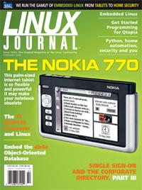

Shutdown Archive web server
Search:
Linux Journal
Issue #142/February 2006

Features
MSP430 Development with Linux
by Brian C. Lane
Blinking LEDs can be fun an instructive for using a nifty TI processor.
Shell Scripting a Camera Server
by Erik Inge Bolso
A few contortions are needed but you can still shell script a surveillance system.
Getting Started with Qtopia
by Lorn Potter
Want to write an application for the increasingly popular PDA platform?
Building a Home Automation and Security System with Python
by Fred Stelter
Want to use Python and cheap hardware to feel more secure about your home?
Embedding the db4o Object-Oriented Database
by Rick Grehan
How to get this single-library powerful database into your embedded system.
Indepth
Thin Clients Pay More
by Stephen Sefton
Thin is always in and cost effective too.
Heterogeneous Processing: a Strategy for Augmenting Moore's Law
by Amar Shan
What do you do when you can no longer enforce Moore's law?
Embedding Python in Your C Programs
by William Nagel
Ever wonder how to put Python on a C food diet?
Three Case Studies in Community-Oriented, Open-Source Software Development
by Randall P. Embry
What does a PDA, video capture card and multimedia appliance have in common?
Toolbox
At the Forge
Assessing Ruby on Rails
by Reuven M. Lerner
Cooking with Linux
Little Bitty Applications
by Marcel Gagné
Paranoid Penguin
Single Sign-On and the Corporate Directory, Part III
by Ti Leggett
Columns
Work the Shell
Conditional Statements and Flow Control
by Dave Taylor
Linux for Suits
A First Look at the Nokia 770
by Doc Searls
/etc/rant
Skim Cream not Scum
by Nicholas Petreley
Review
Fat Man and Little Boy
by James Turner
Departments
From the Editor
Letters
upFRONT
New Products
Archive Index
Shutdown Archive web server
Search:
Copyright © 1994 - 2018
Linux Journal
. All rights reserved.